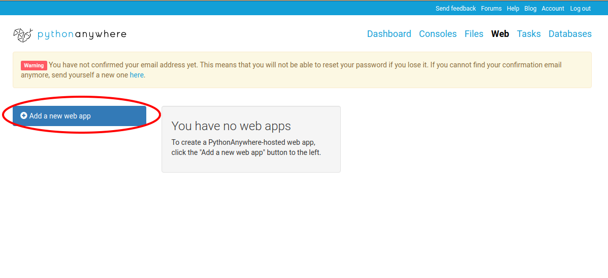
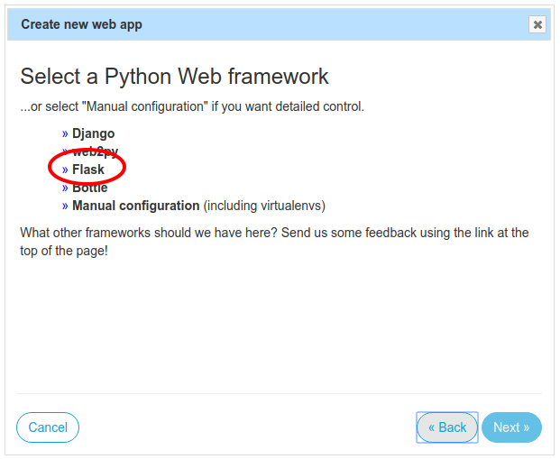
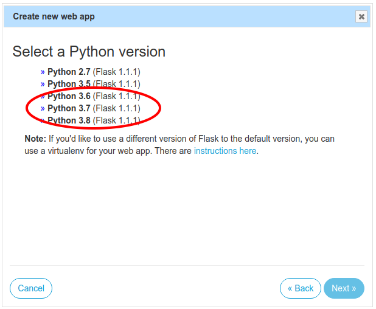
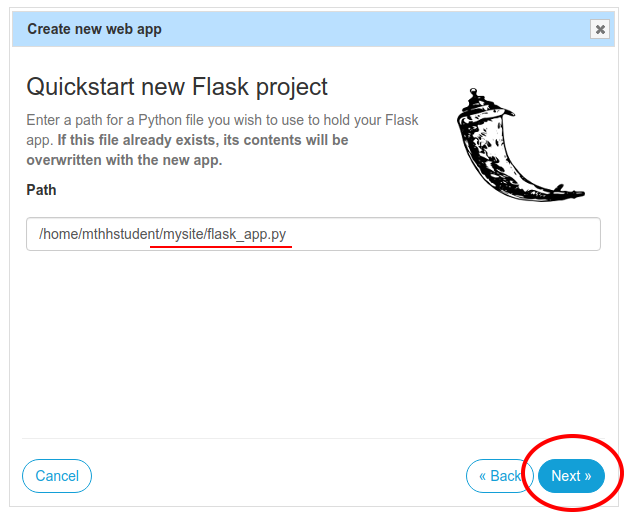
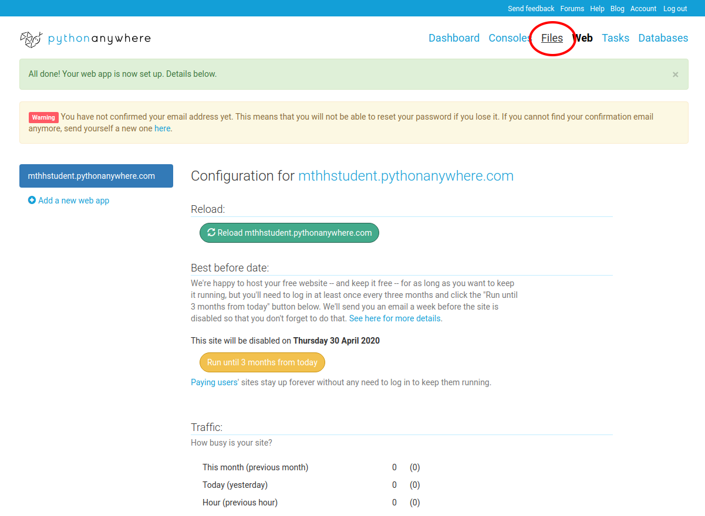
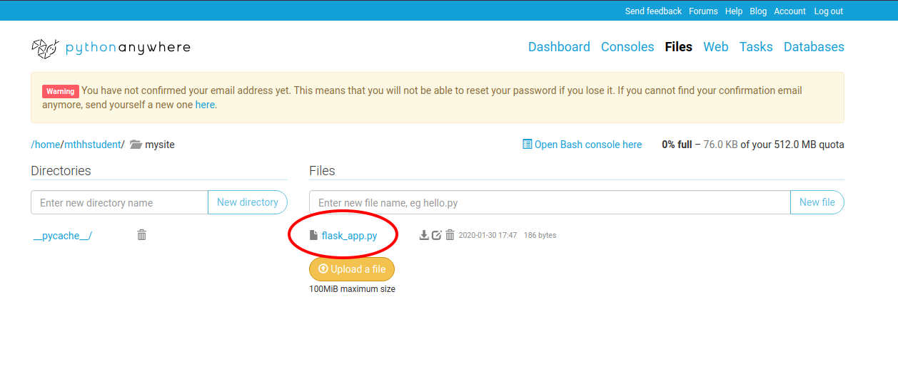
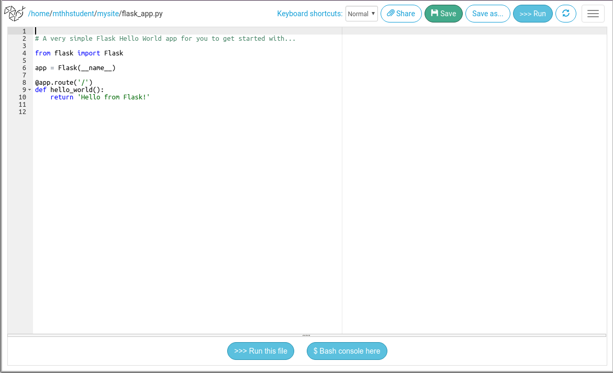
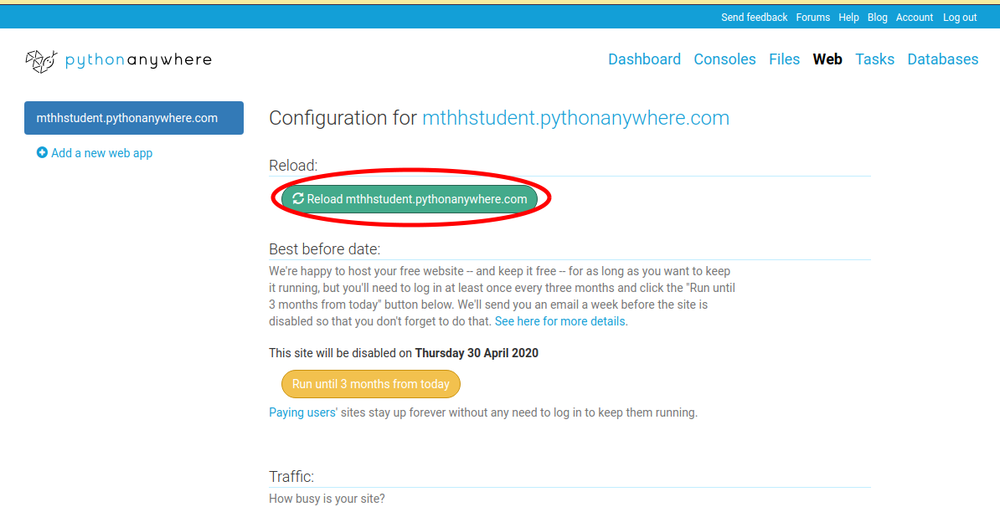
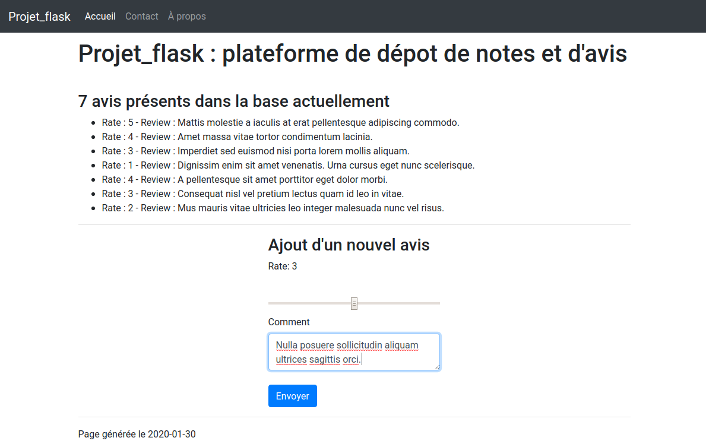
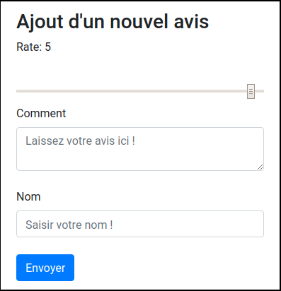

Interactions serveur/client, formulaires et BD
0. Inscription à PythonAnywhere
L'inscription se passe à l'URL suivante : https://www.pythonanywhere.com/registration/register/beginner/.
Cette plateforme va vous permettre d'éxecuter du code Python sur un serveur distant. Cette solution peut être utile si vous voulez vous libérer des contraintes liées à la plateforme sur laquelle vous travaillez (système d'exploitation, droits administrateurs, etc.).
Dans notre cas, elle va être utile car elle permet d'héberger une application Web (créee avec Flask mais aussi avec Web2py ou Django) et d'y accéder à une URL de la forme http://{pseudonyme}.pythonanywhere.com.
Suivez les indications suivantes pour y créer une application Flask vide.
- Après vous être enregistré et loggé sur la plateforme, cliquez sur le bouton "Web" :

- Cliquez sur le bouton "Add a new web app" :

- Une fenetre s'ouvre, cliquez sur "next" :

- Choisissez d'utiliser le framework Flask :

- Sélectionnez la version de Python avec laquelle vous avez l'habitude de travailler :

- Ne modifiez pas le chemin du fichier
flask_app.pyet cliquez sur "next" :

- L'application est créée et accessible à l'URL
https://{pseudonyme}.pythonanywhere.com. Cliquez sur le bouton "Files" pour éditer le code de votre serveur :

- Naviguez dans l'arborescence jusqu'à trouver ce fichier. Cliquez pour l'ouvrir :

- Vous pouvez l'éditer (et le sauvegarder en faisant
ctrl+spar exemple).

- Après l'avoir édité, vous devez recharger votre web app dans la section Web de PythonAnywhere. Je vous conseille d'avoir deux onglets ouverts dans votre navigateur :
- celui de la section "File" avec l'éditeur de code
- celui de la section "Web" ; vous pourrez ainsi mettre à jour l'appli. web directement après sauvegardé votre code et sans quitter l'éditeur.
🚀 Copiez le code de l'application app.py créée dans le TP précédent dans le fichier flask_app.py dans votre espace personnel sur PythonAnywhere. Les étudiants qui ont eu des difficultés avec l'installation de Flask lors du dernier TP peuvent récupérer les fichiers attendus : TP5_correction.zip
🚀 Créez un dossier templates et ajoutez-y les 2 fichiers de template : index.html et header.html.
🚀 Rechargez votre application et vérifiez que tout fonctionne correctement.

Remarque: Vous pouvez consulter les logs d'erreur de l'application à l'adresse https://www.pythonanywhere.com/user/{pseudonyme}/files/var/log/{pseudonyme}.pythonanywhere.com.error.log
1. Préambule
Les objectifs de ce TP sont:
- de connecter l'application
Flaskà une base de données SQLite. - de créer un formulaire permettant d'ajouter une nouvelle entrée à cette base de données.
Pour mobiliser les données de cette BD, nous n'aurons pas à saisir de requêtes SQL ; en effet nous allons utiliser un ORM (un Object Relational Mapping / un Mapping objet-relationnel) du nom de SQLAlchemy.
Il n'y a pas de code à saisir avant la fin cette partie où vous recontrerez à nouveau le symbole '🚀'.
Installation et création de la base de données
En utilisant PythonAnywhere cette bibliothèque est déjà installée, vous n'avez rien de particulier à faire.
Sinon il est possible d'installer SQLAlchemy et l'extension flask_sqlalchemy que nous allons utiliser avec Flask comme les autres packages Python. Si vous avez utilisé un environnement virtuel, veillez à ce qu'il soit activé avant d'effectuer la commande suivante :
pip install flask_sqlalchemy
Localisation de la base de données
Il est nécessaire d'indiquer à l'ORM où se situe la BD à laquelle se connecter, en l'occurence, dans le même dossier que le code de l'application, avec le nom app.db:
from flask import Flask
from flask_sqlalchemy import SQLAlchemy
# On stocke le chemin absolu du dossier qui contient le fichier
# qui s'éxecute :
basedir = os.path.abspath(os.path.dirname(__file__))
app = Flask(__name__)
# app.config est un dictionnaire :
app.config['SQLALCHEMY_DATABASE_URI'] = 'sqlite:///' + os.path.join(basedir, 'app.db')
db = SQLAlchemy(app)
Créer un modèle correspondant au type d'entrées que nous souhaitons
Nous souhaitons stocker nos notes et avis dans une table Review.
Celle-ci va pour l'instant n'avoir que trois colonnes :
id_review(l'identifiant unique de l'avis),rate(une note, de 1 à 5, où 5 représente la plus forte note),comment(un champ de texte libre, limité à 255 caractères mais qui peut être laissé vide).
class Review(db.Model):
id_review = db.Column(db.Integer, primary_key=True)
rate = db.Column(db.Integer, nullable=False)
comment = db.Column(db.String(255))
Ce code va permettre de modifier la base de données sans écrire de requêtes SQL mais en manipulant des objets Python.
Notez que nous avons spécifié le type attendu (db.Integer, db.String, ..) pour chaque colonne (db.Column) de la table (ici Review) que vous allons manipuler à travers ce modèle.
Utiliser le modèle pour communiquer avec la BD dans un style orienté-objet (1)
On pourra par exemple créer une review et l'ajouter à la base de données avec le code suivant :
new_review = Review(
rate=5,
comment="Mattis molestie a iaculis at erat pellentesque adipiscing commodo.",
)
db.session.add(new_review)
db.session.commit()
Il n'est pas nécessaire d'indiquer l'identifiant de la review à créer : comme il s'agit d'une clé primaire, elle sera renseignée automatiquement lors de l'appel de la méthode db.session.commit() en fonction des entrées déjà présentes dans la table.
Utiliser le modèle pour communiquer avec la BD dans un style orienté-objet (2)
C'est également avec ce modèle Review qu'on pourra faire des requêtes sur la table correspondante :
# Renvoie toute les entrées de la table `Review`
all_review = Review.query.all()
# Effectue une requete sur la table `Review`
# en utilisant la clé primaire (ici id_review):
review2 = Review.query.get(2)
Il est possible d'accéder aux valeurs qui correspondent à chacun des champs de la table Review pour une entrée donnée :
print(review2.rate) # --> 4
print(review2.comment) # --> "Amet massa vitae tortor condimentum lacinia."
Putting it all together...
Ce code correspond à l'adaptation du code obtenu à la fin du TP précédent, en se connectant cette fois à une base de données avec SQLAlchemy comme présenté ci-dessus.
🚀 Prenez-en connaissance attentivement et copiez-le dans le fichier flask_app.py dans votre espace PythonAnywhere.
🚀 Récupérez le fichier app.db, il s'agit de votre base de données SQLite. Copiez le dans votre espace PythonAnywhere dans le même dossier que le fichier flask_app.py.
from flask import Flask, render_template, request, url_for, redirect
from flask_sqlalchemy import SQLAlchemy
from datetime import date
import os
basedir = os.path.abspath(os.path.dirname(__file__))
app = Flask(__name__)
app.config['SQLALCHEMY_DATABASE_URI'] = 'sqlite:///' + os.path.join(basedir, 'app.db')
db = SQLAlchemy(app)
class Review(db.Model):
id_review = db.Column(db.Integer, primary_key=True)
rate = db.Column(db.Integer, nullable=False)
comment = db.Column(db.String(255))
@app.route("/")
@app.route('/index')
def root():
all_reviews = Review.query.all()
return render_template('index.html',
list_reviews=all_reviews,
nb_reviews = len(all_reviews),
current_date=date.today().isoformat())
@app.route('/review/<int:ident>')
def review(ident):
the_review = Review.query.get(ident)
if the_review:
return 'Rate: {} - Comment: {}'.format(the_review.rate, the_review.comment)
else: ''
# Ce morceau de code sert à créer la base de données avec les memes entrées
# que celles utilisées dans le TP précédent.
# Il sert à créer le fichier `app.db` que je vous ai fournis,
# il ne sera donc pas éxécuté.
# Pour l'exécuter, il faut saisir `flask init_db` dans le dossier avant le 1er
# démarage de l'application, dans le dossier où vous vous apprêtez
# à saisir `flask run` pour démarrer l'application
@app.cli.command("init_db")
def init_db():
db.create_all()
entries = [
{"id_review": 1, "rate": 5, "comment": "Mattis molestie a iaculis at erat pellentesque adipiscing commodo."},
{"id_review": 2, "rate": 4, "comment": "Amet massa vitae tortor condimentum lacinia."},
{"id_review": 3, "rate": 3, "comment": "Imperdiet sed euismod nisi porta lorem mollis aliquam."},
{"id_review": 4, "rate": 1, "comment": "Dignissim enim sit amet venenatis. Urna cursus eget nunc scelerisque."},
{"id_review": 5, "rate": 4, "comment": "A pellentesque sit amet porttitor eget dolor morbi."},
{"id_review": 6, "rate": 3, "comment": "Consequat nisl vel pretium lectus quam id leo in vitae."},
]
for e in entries:
a = Review(id_review = e['id_review'], rate = e['rate'], comment = e['comment'])
db.session.add(a)
db.session.commit()
2. Création d'un formulaire HTML et traitement coté serveur
Notre page d'accueil ne va plus se contenter de lister les avis déjà présents ; il va désormais être possible d'en ajouter de nouveaux grâce à un formulaire HTML.
Ce formulaire HTML sera remplit par le client, dans son navigateur Web puis envoyé (méthode HTTP POST) au serveur qui l'ajoutera à la base de données.
<!-- le début
de votre fichier ici
-->
<div class="row"> <!-- On utilise les lignes/colonnes Bootstrap ... -->
<div class="col-md-4 mx-auto"> <!-- .. pour obtenir rapidement une disposition agréable -->
<h3>Ajout d'un nouvel avis</h3>
<form action="{{ request.path }}" method="post">
<label for="rate">Rate: </label>
<output name="rateOutput" id="ageOutputId">5</output><br><br>
<input type="range" name="rate" id="rateInput" min="1" max="5" value="5" class="form-control" oninput="rateOutput.value = rateInput.value"/>
<label for="comment">Comment</label><br>
<textarea name="comment" maxlength="255" placeholder="Laissez votre avis ici !" class="form-control"></textarea><br>
<input type="submit" value="Envoyer" class="btn btn-primary" />
</form>
</div>
</div>
<!-- le reste de votre fichier ici, normalement :
<hr />
<p>Page générée le {{ current_date }}</p>
</div>
...etc.. -->
Explications :
- Ce formulaire, définit par l'élément HTML
<form> </form>va être envoyé au chemin définit dans l'attributaction(ici la route actuelle à laquelle la page a été appelée, en utilisant le mécanisme de template vu précédemment), avec la méthode HTTPpost. - Il contient un champ
<input>de typerange: c'est un slider numérique dont on peut définir les valeurs min et max attendues ; il va servir à renseigner la note, de 1 à 5, donnée par l'utilisateur. - Il contient un champ
<textarea>: c'est un zone de saisie de texte qui peut s'étendre sur plusieurs lignes. - Il contient un élément
<input>de typesubmit: celà créé un bouton qui a pour vocation à appeler l'action définit pour ce formulaire (cf. 1er point de cette liste). L'attributclassqu'il utilise lui permet d'utiliser un style de Bootstrap.
🚀 Ajoutez le code de ce formulaire au fichier templates/index.html.
Lorsque l'utilisateur clique sur "Envoyer", le formulaire est donc transmis au serveur avec la méthode POST.
Il est donc nécessaire d'adapter le code de notre application Flask pour gérer ce type de requête. Nous allons modifier le code de la route qui génère actuellement cette page:
from flask import request, url_for, redirect
# ^ À ajouter avec les autres imports
@app.route("/", methods=['GET', 'POST'])
@app.route('/index', methods=['GET', 'POST'])
def root():
if request.method == 'GET':
all_reviews = Review.query.all()
return render_template('index.html',
list_reviews=all_reviews,
nb_reviews = len(all_reviews),
current_date=date.today().isoformat())
elif request.method == 'POST':
new_review = Review(
rate=request.form['rate'],
comment=request.form['comment'])
db.session.add(new_review)
db.session.commit()
return redirect(url_for('root'))
Explications :
- Lorsqu'une requête HTTP de type GET à lieu sur cette route, l'application récupère l'ensemble des entrées de la table
Review(avecReview.query.all()) puis elle appelle le templateindex.htmlen utilisant les arguments appropriées et vus précédemment. - Lorsqu'une requête HTTP de type POST à lieu sur cette route, l'application:
- lit le formulaire (
request.form) en accédant à la valeur des champs avec la notation entre crochets (request.form['rate']etrequest.form['comment']) - créée un objet correspondant à une nouvelle entrée (
new_review = Review(rate=data['rate'], comment=data['comment'])) - ajoute cette entrée à la table
Reviewavecdb.session.add(new_review)etdb.session.commit() - renvoie la page actuelle (
redirect(url_for('root'))), celà a pour effet de rafraichir la page dans le navigateur du client et de faire apparaître l'avis qu'il vient de laisser
- lit le formulaire (
🚀 Lisez attentivement ce morceau de code, il mobilise le modèle Review présenté précedemment ainsi que les fonctionnalités d'ajout à la base de données.
🚀 Ajoutez-le à votre fichier flask_app.py en remplacement de la fonction root actuelle.
🚀 Après avoir sauvegardé votre code, recharger votre web app dans l'onglet "Web" de PythonAnywhere. Testez l'ajout de nouveaux avis grâce au formulaire qui vient d'être créé.
- Le résultat attendu est le suivant :

🚀 Modifiez le code l'application pour ajouter un champ name_reviewer au modèle Review. Cette modification doit également se refléter dans le formulaire affiché à l'utilisateur qui doit maintenant proposer un champ "Nom".
Vous devrez modifier plusieurs éléments dans le fichier flask_app.py (le modèle, la création d'une nouvelle entrée, etc.) et dans le formulaire du fichier index.html (ajout d'un nouvel élément <input type="text" />, etc.).
